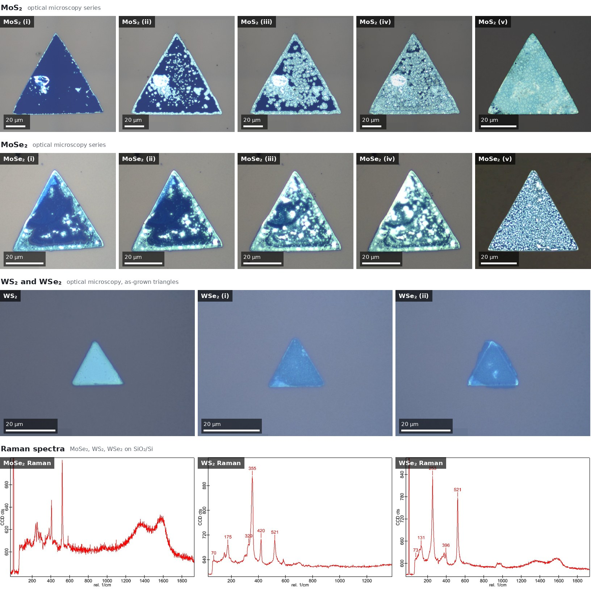

Research project · 01
CVD Growth and Characterization of 2D Semiconductors
Investigating the growth of MoSe₂, WS₂ and WSe₂ on lithographically patterned Si/SiO₂ substrates, focusing on precursor selection, temperature, hydrogen flow and dwell time.

Experimental design
Metal or metal-oxide precursor layers were deposited by RF sputtering onto Si/SiO₂ substrates with triangular lithographic patterns. Sulfur or selenium was supplied from a separate boat during the CVD growth process.
| Study | Precursor layer | Variables investigated |
|---|---|---|
| MoSe₂ growth | Mo and MoO₃ | 400, 450 and 500 °C |
| Hydrogen-flow study | MoO₃ | 14, 20 and 24 sccm H₂ |
| Growth-time study | MoO₃ | 1, 2, 3, 4 and 5 min at 24 sccm H₂ |
| WS₂ growth | W | 400–500 °C |
| WSe₂ growth | W | 400–500 °C |
Results & data
Present the experimental evidence in a consistent order: precursor and temperature, hydrogen-flow dependence, growth evolution, and extension to WS₂ and WSe₂.
MoSe₂ · Precursor and temperature
400 / 450 / 500 °C
MoSe₂ · Hydrogen flow and growth time
14 / 20 / 24 sccm · 1–5 min
WS₂ and WSe₂ · Temperature-dependent growth
W precursor · 400–500 °C
Figure numbering and captions can be adjusted to match the final selection of experimental results. Use consistent scale bars, sample labels, axes and units throughout.
Key findings
Use three concise statements to communicate what the data demonstrate, rather than repeating the experimental procedure.
Morphology
Summarize observed triangular domains, lateral dimensions, nucleation density or coverage using measured values.
Growth conditions
Report the trends supported by the temperature, H₂-flow and dwell-time comparisons.
Material characterization
Report verified Raman features or other characterization results and explain what they support.
Replace these prompts with your actual observations before publishing. Do not infer a trend from an image or plot that has not been analysed.
My contribution
A concise account of the experimental and analytical work undertaken within the project.
- 01Conducted CVD growth studies using RF-sputtered metal or metal-oxide layers on patterned Si/SiO₂ substrates.
- 02Investigated precursor selection and process conditions for MoSe₂, including temperature, hydrogen flow and dwell time.
- 03Extended growth experiments to WS₂ and WSe₂ using W-containing precursor layers.
- 04Documented experimental morphology and performed image analysis or material characterization where applicable.
References
Background literature for understanding precursor conversion, hydrogen-assisted growth and characterization of transition-metal dichalcogenides.
-
Singh et al., “Raman spectroscopic investigations of the selenization of MoO₃ in the chemical vapor deposition process to form two-dimensional MoSe₂,” Applied Surface Science, 538, 147946 (2021).
Read paper ↗ -
“Revealing the microscopic CVD growth mechanism of MoSe₂ and the role of hydrogen gas during the growth procedure,” Nanotechnology, 29, 314001 (2018).
Read paper ↗ -
“WS₂ nanotube formation by sulphurization: Effect of precursor tungsten film thickness and stress,” Materials Chemistry and Physics (2016).
Read paper ↗ -
“Optimisation of processing conditions during CVD growth of 2D WS₂ films from a chloride precursor,” Journal of Materials Science (2022).
Read paper ↗ -
“Thickness-dependent Raman spectra of CVD-grown WSe₂ thin films,” New Physics: Sae Mulli, 65, 633–637 (2015).
Read paper ↗
Verify author lists, titles, publication details and DOI metadata against the original papers before final publication. These works provide context for your research; they are not evidence of your experimental findings.